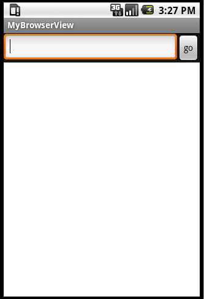

Android学习之利用WebView打开网页
大家好，今天我们一起学习通过webView打开网页：
首先还是布局文件main.xml的Code：
<linearlayout xmlns:android="http://schemas.android.com/apk/res/androidandroid:layout_width="fill_parent
android:layout_height="fill_parent
android:orientation="vertical" >
<linearlayout
android:layout_width="fill_parent
android:layout_height="wrap_content
android:orientation="horizontal" >
<edittext
android:id="@+id/editText
android:layout_width="fill_parent
android:layout_height="wrap_content
android:layout_weight="1.0
android:lines="1" />
<button
android:id="@+id/button
android:layout_width="wrap_content
android:layout_height="wrap_content
android:text="go" />
<webview
android:id="@+id/webView
android:layout_width="fill_parent
android:layout_height="wrap_content
android:layout_weight="1.0" />
<webview>
</webview>
</linearlayout>
利用两个LineraLayout的嵌套显示，上面显示一个编辑框和按钮，下面的是webView用来显示网页，大家要注意两个LineraLayout的android:orientation的属性，最外面的这个是垂直显示，里面的是水平显示，最终得到效果如图：

效果图下面的白色区域就是webView，等Java的Code完成后就能看出效果啦，期待吧！呵呵！
import android.app.Activity;import android.widget.*;
import android.os.Bundle;
import android.webkit.*;
import android.view.KeyEvent;
import android.view.View;
import android.view.View.*;
public class MyBrowserView extends Activity {
private EditText editText;
private Button button;
private WebView webView;
@Override
public void onCreate(Bundle savedInstanceState) {
super.onCreate(savedInstanceState);
setContentView(R.layout.main);
editText = (EditText) findViewById(R.id.editText);
button = (Button) findViewById(R.id.button);
webView = (WebView) findViewById(R.id.webView);
button.setOnClickListener(new OnClickListener() {
// 同样为按钮绑定点击事件
public void onClick(View v) {
openBrowser();
}
});
editText.setOnKeyListener(new OnKeyListener() {
// 同样为编辑框绑定键盘事件
@Override
public boolean onKey(View v, int keyCode, KeyEvent event) {
if (keyCode == KeyEvent.KEYCODE_ENTER) {
openBrowser();
return true;
}
return false;
}
});
}
// 利用webView的loadUrl方法
public void openBrowser() {
webView.loadUrl("http://" + editText.getText().toString());
}
}
除了openBrowser()方法，其他的和用Intent打开网页是差不多的。只要利用webView的loadUrl（）方法就能加载网页。好的什么也不说啦！看效果图：

哈哈，不错吧，这样就方便打开别的网页啦！哦！差点忘了，要在AndroidManifest.xml中加入
<uses-permission android:name="android.permission.INTERNET">
否则就不能访问Internet哟！到这里看了上一篇的同学可能就问，为什么上个例子不要加上这条语句呢？因为通过Intent就能请求其他应用程序查看网页，而其他应用程序需要在自己的AndroidManifest.xml中请求获得访问Internet的权限。